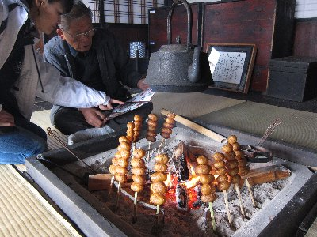
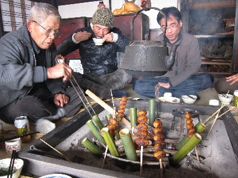
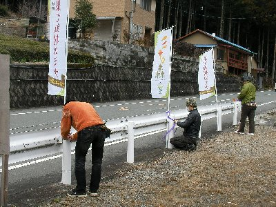
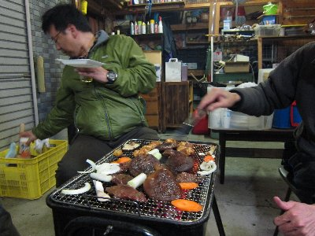
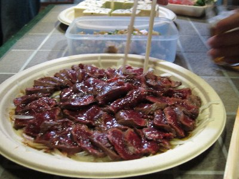
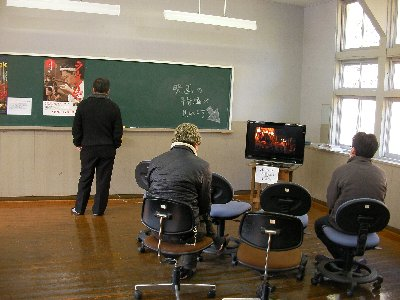

水窪映画オーディションボランティア | 2011年3月 幹事：じゅんじゅん |
|---|---|
| 毎度お世話になっている、水窪を舞台にした映画が撮られるようで、そのお手伝いをしに、またまた水窪に遊びに行ってきました。（←手伝いなのか、遊びなのか） 水窪は過去に何度か紹介しているので、詳しくは割愛します。 今回もお泊り企画。このお泊りが楽しくて行っているようなものです♪ まずは、土曜日お昼に、前回お世話になった「天空の里 大沢」へ。ここで昼食です。天気がイマイチの曇り空。でも、そこは天空の里、雲の中を進み、雲の切れ目から山々が見える。水墨画のような景色でした。 | |
 眼下に雲が見える大沢 |  再生された古民家で昼食 |
| 前回修理中だった古民家での昼食で、囲炉裏を囲んでの食事です。この古民家、もうしばらくすると宿泊所としても活躍が期待されるそうです。どこを直したのかは、よくわかりませんが、ランプの宿になるみたい。 食事は、串に刺した芋焼き、あえ物、ヒジキ、栃餅など。少し甘い味付けの食事は美味しくて、ついつい食べ過ぎちゃう。珍しかったのは、青竹に生卵とミソをいれ、囲炉裏に差し込み、焼けたら竹を割って食べる卵焼き。 | |
 マスコット犬（吠えますが） |  卵入れた竹筒差して |
| お腹一杯になったら、体動かさないと。 午後は、明日オーディションが行われる会場設営のお手伝い。といっても、机出して旗を掲げただけ。そこでも、カマドで炊いたオニギリを頂き、さらに満腹。 | |
 オーディション会場のミナの森 （旧にしうれ小学校） |  のぼり設置中 |
| 旅館のお風呂を借りて、本日メインの宴会場兼宿泊所へ。今回は、毎回お世話になっている板橋さんの秘密基地が会場です。どんな所かと思っていたけど、大きい倉庫に１０畳位の部屋が付いてる立派なものでした。倉庫は仕事関係の荷物を閉まってあるみたいだけど、中でバーベキューは出来るし、薪ストーブも付いてる。部屋はコタツあり、音響設備あり、防音使用！ 凄すぎる！もちろんトイレあり。 バーベキューは鹿肉、豚肉、採れたてジューシー椎茸。それと鹿肉のカルパッチョ。これ新鮮な良い肉でしか出来ないんだって。それでもトリミングして1/3位は捨てちゃうらしい。貴重だ。アマゴのなめろう。これも絶品！ 豆腐を塩で水抜きして、何か掛けてあるもの。高野豆腐まで硬くないけど美味し！ ビール飲みながら、美味いもので舌鼓〜 幸せです♪ | |
|  お楽しみ、夕食バーベキュー |  激旨、鹿肉カルパッチョ |
| 翌日の日曜日は、水窪「ミナの森（旧にしうれ小学校）」で映画のオーディション。映画は「果てぬ村のミナ」と言って、瀬木直貴監督の作品だそうです。2012年冬に公開予定。 今回のオーディションは、脇役系選出みたいですね。地元商工会等の出店も出て、お祭りの様です。方言クイズもあったりして。 そして、我がしふとべるから、シュガーがオーディションに参加いたしました！その他のメンバーは、オーディション関係のお手伝い。（主に部屋の管理？） シュガーは午後の部だったけど、午前中から緊張しまくりで落ち着かない様子。 オーディション参加者は80名位。地元の人が多いけど、中には俳優目指してます！劇団入ってます！ みたいな人達も居ます。 自己紹介から始まって、自己ＰＲ（一人芝居）、集団でのお遊戯的な・・・ 瀬木監督も参加して、結構本格的〜 教室でやっているオーディションは、廊下から見学が可能で、見ていても結構面白いです。ギター持参で自己ＰＲしている人もいました。 | |
|  監督作品紹介コーナー |  オーディション中 |
| 瀬木監督の作品紹介部屋で、見張りと言うか案内と言うか、やっていたけど、色々な映画撮っているんですね。申し訳ないけど、一個も見てない。でも、予告編集（映像で流していた）見ていたら、気になる映画も有りました。（「ＫＩＺＵＫＩ」「千年火」とか） シュガーが端役でも、銀幕デビュー出来るのか？！ 乞うご期待！ | |
| 写真＆コメント：べっしー | |